Páramo andino
En la zona alta de Nazón, un páramo frío y húmedo guarda vegetación nativa y vertientes naturales.
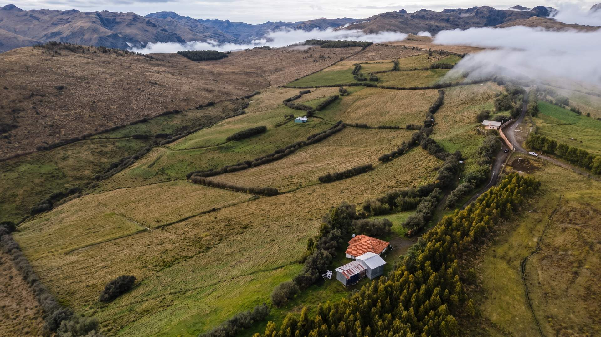
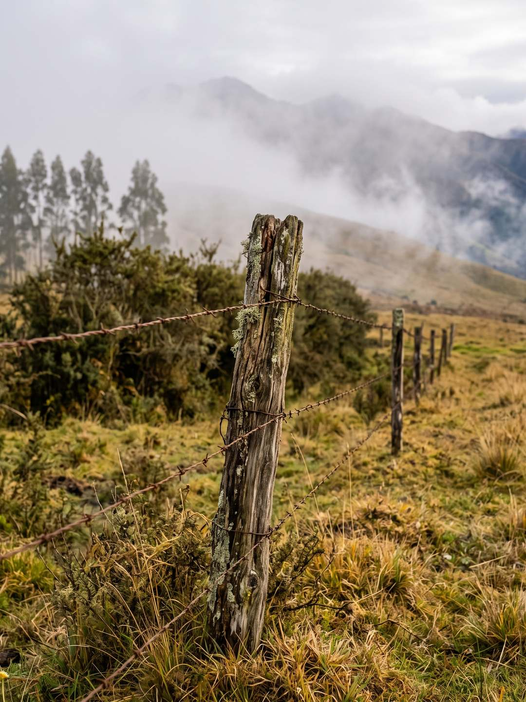
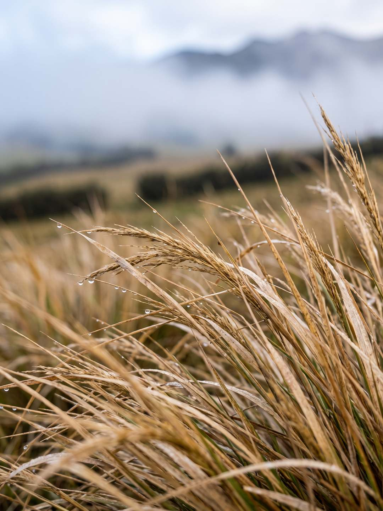
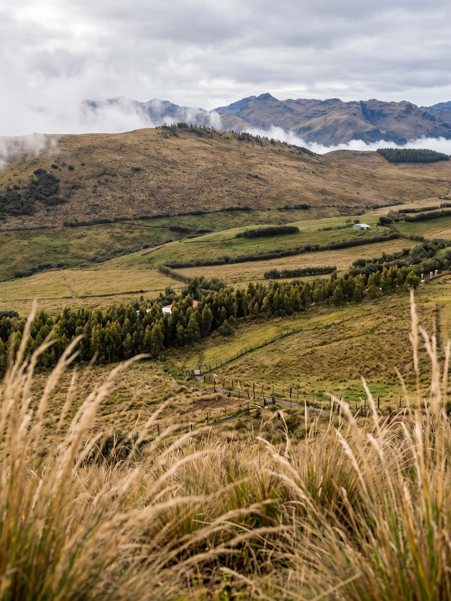
En la zona alta de Nazón, un páramo frío y húmedo guarda vegetación nativa y vertientes naturales.
Sus vertientes funcionan como esponjas: guardan el agua y la entregan a las comunidades de la zona.
Pocos lo conocen. Visítalo con guías locales y ayúdanos a cuidarlo para que siga así.
Tuñi Sagre está en la zona alta de Nazón, un páramo andino de clima frío y humedad constante. Sus vertientes funcionan como esponjas naturales: guardan el agua y la reparten a tres cantones. Recorrerlo es entender de dónde viene lo que sale de tu grifo y por qué vale la pena cuidarlo.
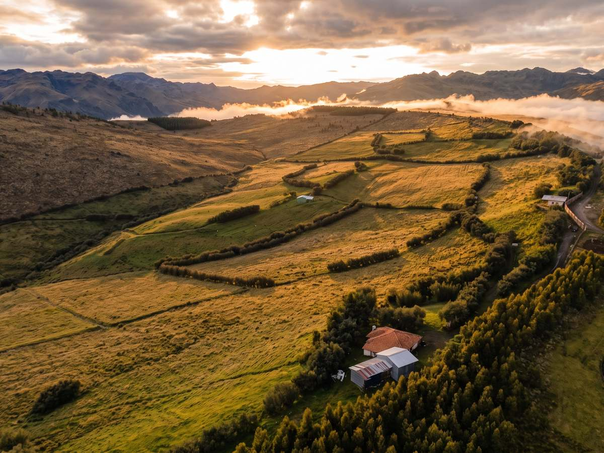
Se organizan caminatas para jóvenes que unen el páramo de Tuñi con el sector de Ñamurelte. Caminas entre vegetación nativa y vertientes, y aprendes por qué cuidar estas fuentes de agua importa.
Caminar por todo el páramo de Tuñi a Ñamurelte
Recorrer las vertientes que abastecen a tres cantones
Pisar un tramo de la antigua ruta de Tomebamba a Ingapirca
Conocer la lechería y la agricultura de las faldas del cerro
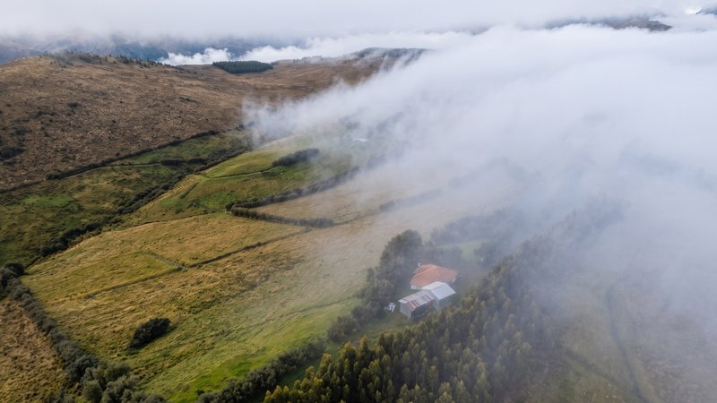
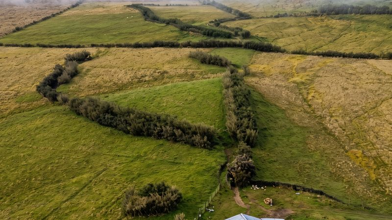
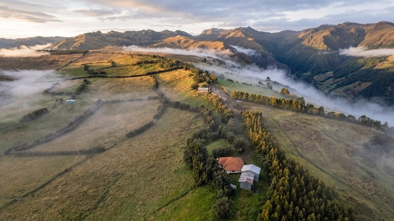
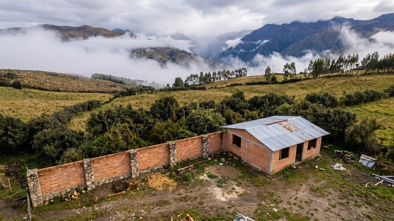
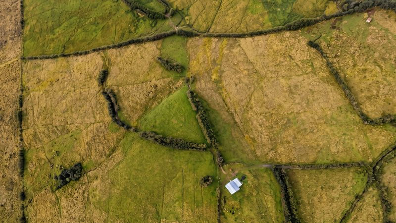
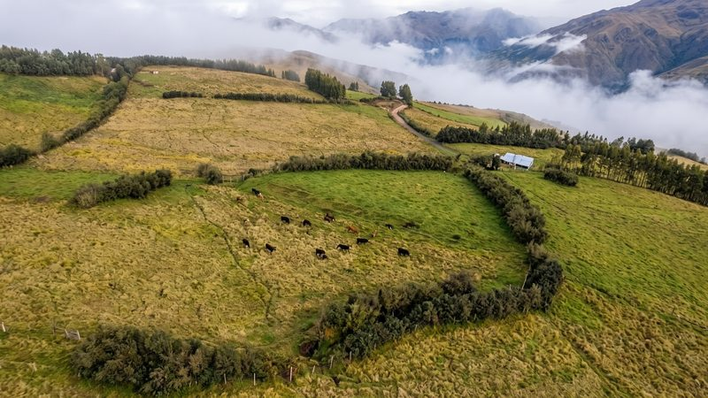
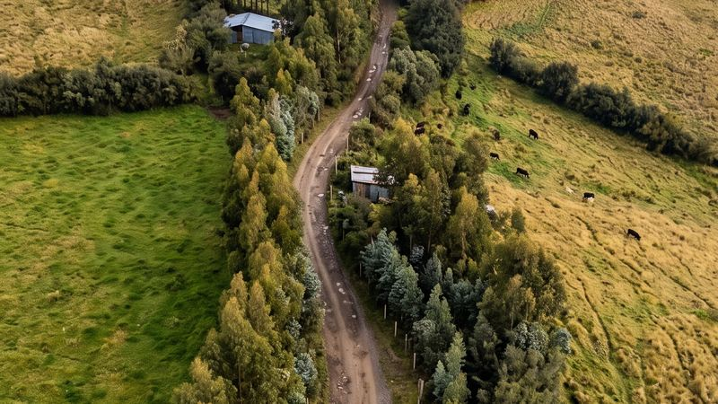
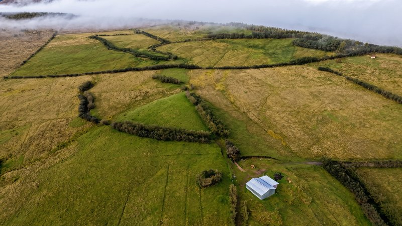